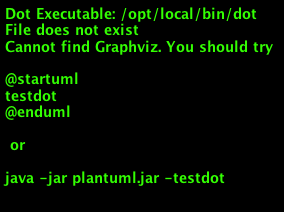

Introduction to the Read-The-Docs Example Project¶
Test graphviz drawing from mft.dot
digraph G { bgcolor="transparent"; node [fontsize=10 shape=record] node [fontsize=10] rankdir=LR bin_complete [label="<ext>Extended Manifest\n(unsigned) |<mft>Manifest\n(signed)|<bins>Binaries"] mft [label="<hdr>CSE Header |CSS Header (Type 4)\nmodule_type = 4\n... |<mcb>ManifestCryptoBlock |PlatformFirmware\nAuthenticationExtension |...other extensions... |AdspMetadataFileExtension |...alignment... |AdspFwBinaryDesc"] mcb [label="ManifestRSAKey\nmodulus\nexponent |Signature"] bin_complete:mft -> mft:hdr mft:mcb -> mcb }Test another graphviz drawing from repo_sync.dot
digraph repo_sync { bgcolor="transparent"; rankdir=LR compound=true; node [fontsize=10, shape=record, style=rounded]; edge [fontsize=10]; subgraph clusterPublic { label="sound-open-firmware"; fontsize=10; subgraph clusterPubMaster { label="master\n(RW)"; fontsize=11; style="filled,rounded"; color="#F0F0F0" c1 -> c2 -> c3 -> c4; } subgraph clusterPubabcProd { label="abc_prod\n(RO replica)"; fontsize=11; style="filled,rounded"; color="#F0F0FF" node [style="rounded,dashed"]; abc_c4 [label="c4 [REL1]"]; abc_c1 -> abc_c2 -> abc_c3 -> abc_c4; } } }And a test of plantuml from ssp.pu
